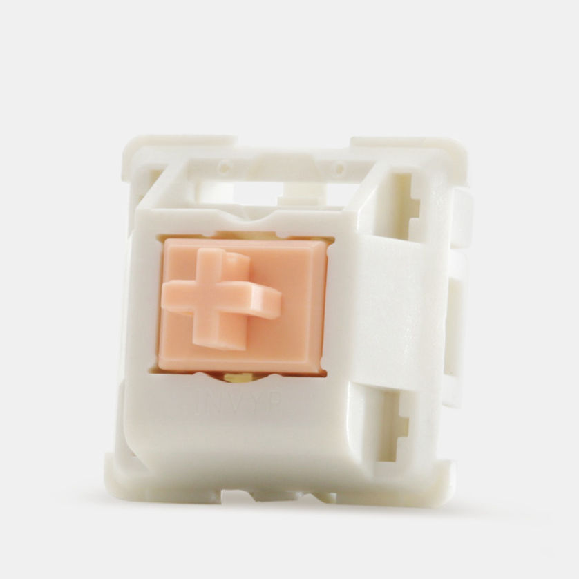
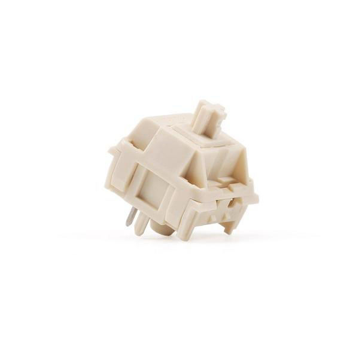

Different types of switches

Cherry MX blues. (Clicky)
These switches have a really loud audible "click" once you press down on it. These are most popular as a lot of gaming keyboards come with these switches.

Holy Pandas. (Tactile)
You might not have heard of these as they're for enthusiasts, Drop Holy Pandas give you a bump once you press down on it.

Novelkeys Creams. (Linear)
Novelkeys (NK) creams are the most popular enthusiast switches as Tfue's custom keyboard came with it.
Linear switches are like tactile switches but without the bump.